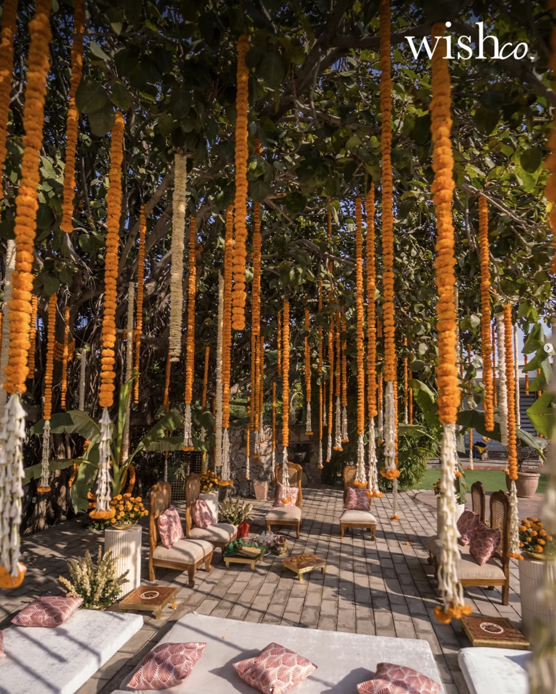
Haldi · Mehendi
Marigold shade
Ivory bases, woven rugs, floor cushions, and one dense marigold gesture. Keep proper chairs nearby for older guests.
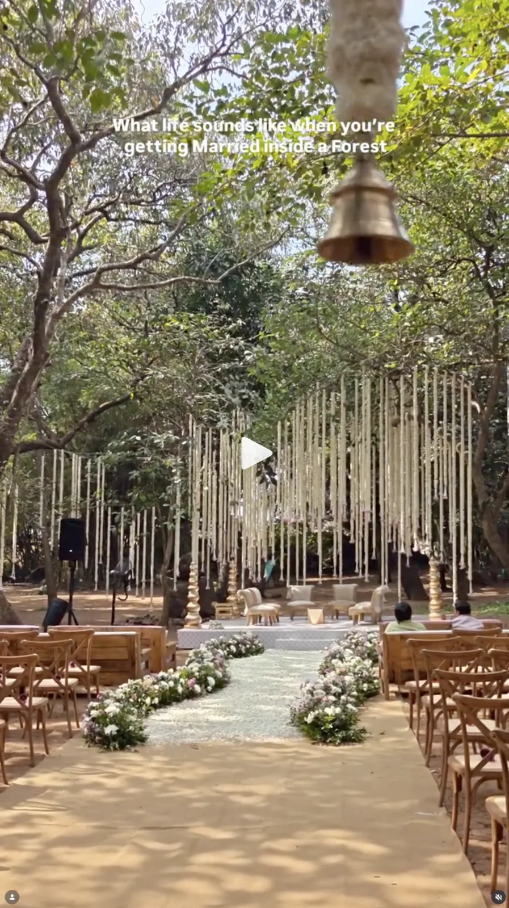
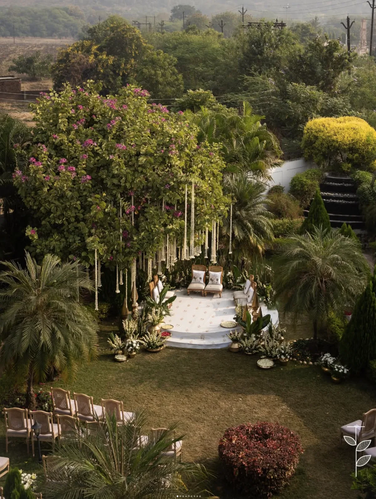
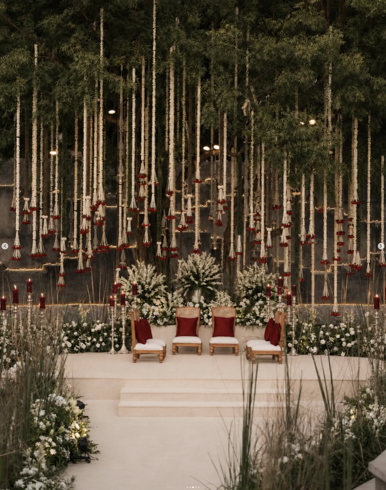
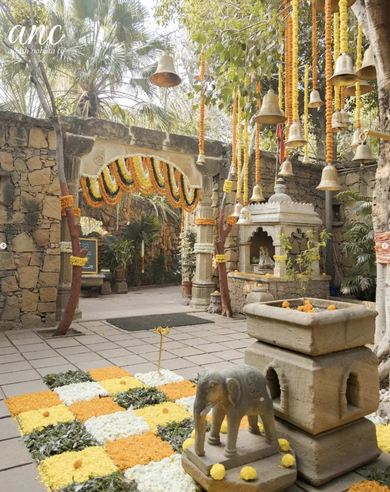
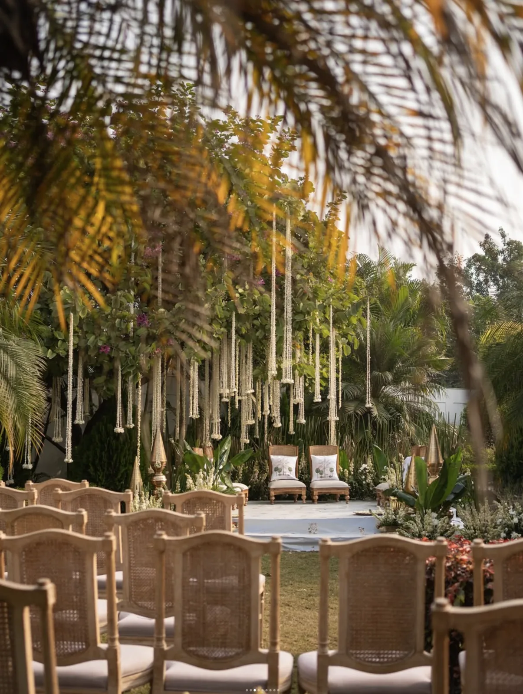
The venue supplies the grandeur. Décor adds rhythm, ritual, and light—never a second building inside the landscape.

Ivory bases, woven rugs, floor cushions, and one dense marigold gesture. Keep proper chairs nearby for older guests.
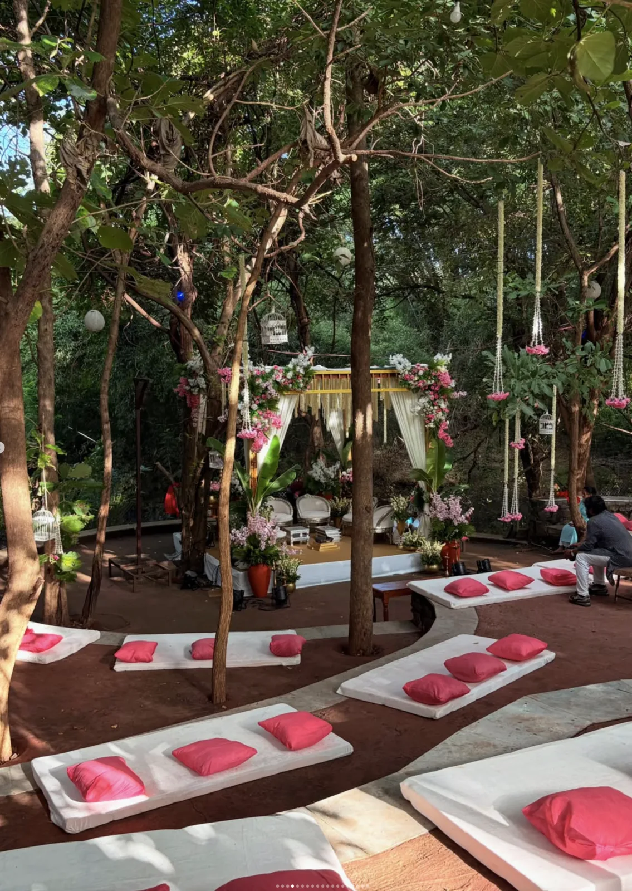
Use the grove for intimate conversation zones. Small accents and generous negative space keep it elegant.
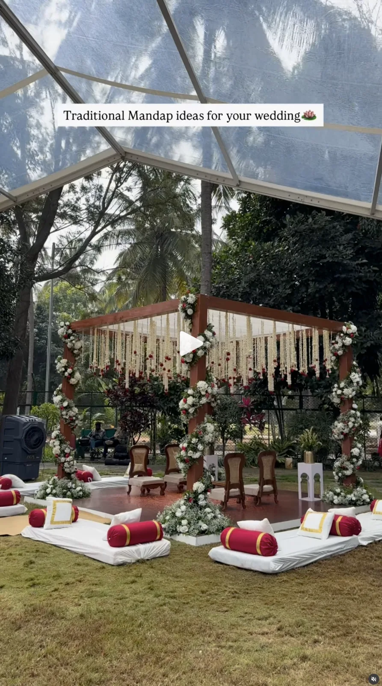
A light, engineered canopy can preserve the garden feeling while solving rain and wind. Ventilation and havan clearance are non-negotiable.
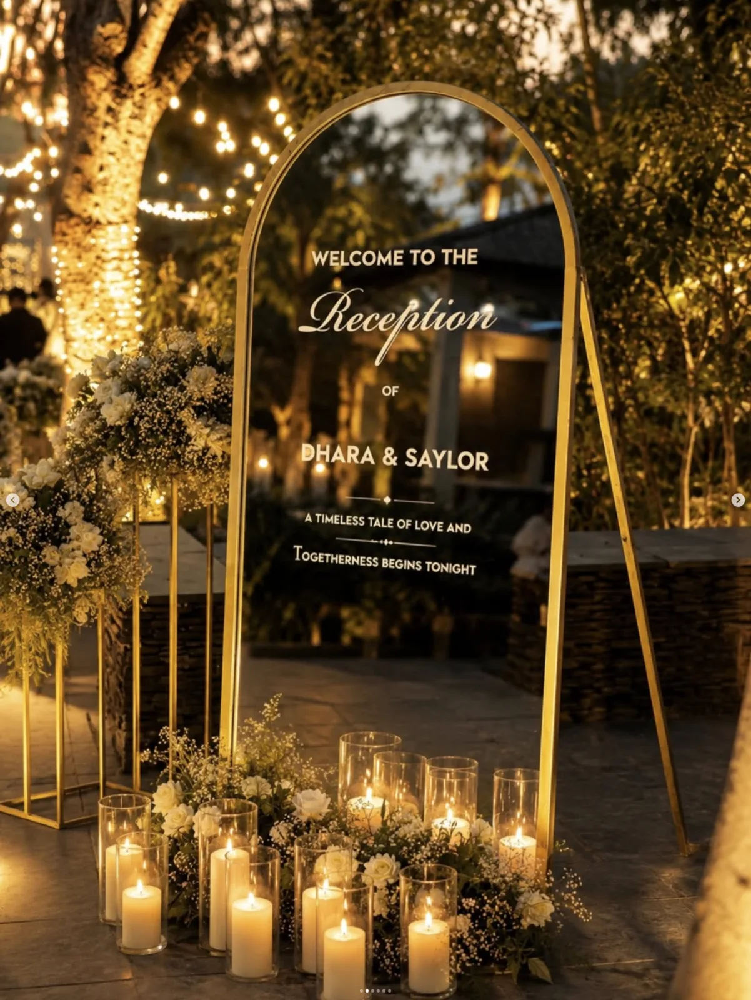
Candles in glass, aged brass, and discreet tree uplighting. Lighting should feel warm and architectural, never nightclub-like.
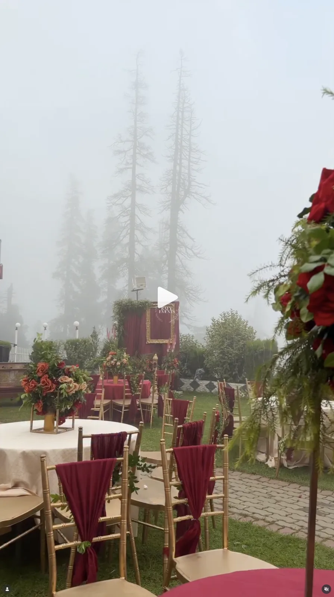
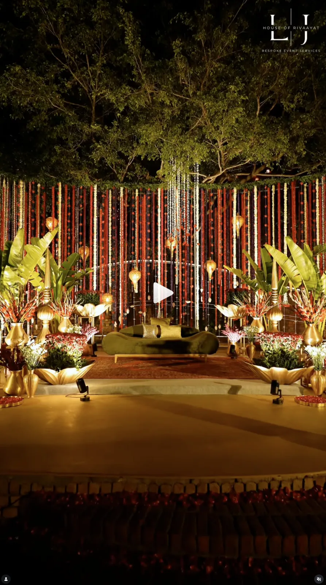
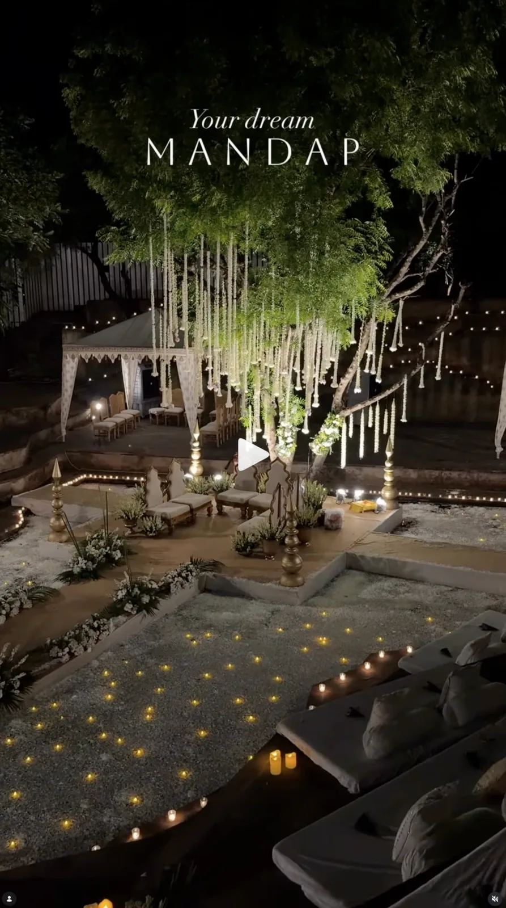